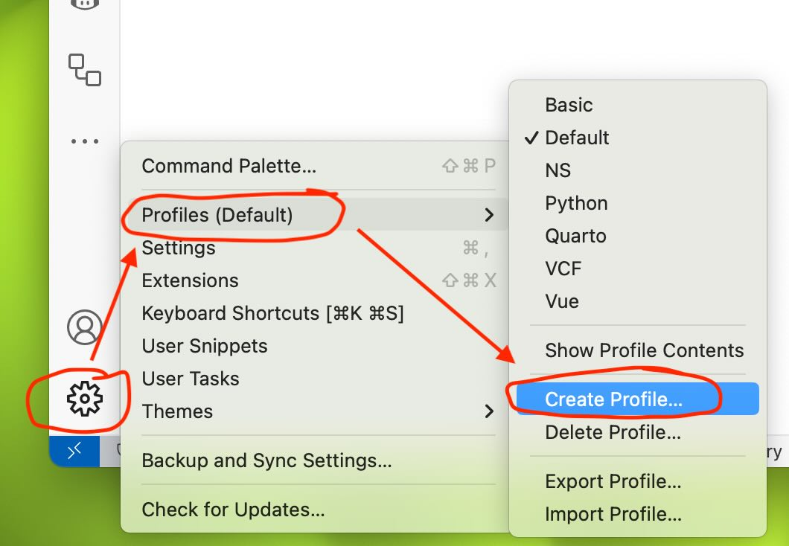
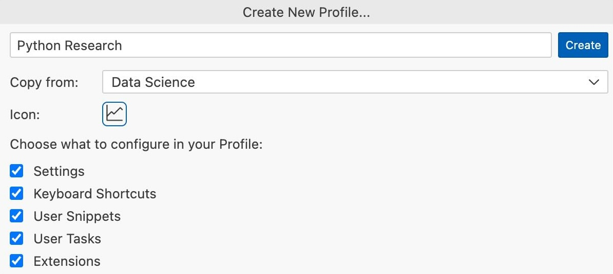

1 Installing Python
In this chapter, I cover installing Python 3.14 and the related tools for a complete coding environment.
Not sure if you want to install Python on your computer? No worries, you can use Python in the cloud. I recommend GitHub Codespaces, which allows you to run in your browser an environment almost identical to the one you would get from a local installation. You can find the instructions at the end of this post.
1.1 What you need for a complete Python environment
The most common way to use Python is to install it locally on your computer. The instructions below will guide you through the process of installing the following tools:
- uv: A package manager for Python. I use it to manage the external libraries used in projects. uv makes it easy to install and update libraries on a per-project basis, and to make sure all collaborators use the same library version.
- Python: The Python interpreter, which allows you to run Python code. We will install multiple versions using uv.
- Visual Studio Code: Visual Studio Code is a free source code editor made by Microsoft. Features include support for debugging, syntax highlighting and intelligent code completion. Users can install extensions that add additional functionality.
We will also install the following tools that are not required to run Python code, but are useful when working on projects with code:
- Git and GitHub: I use Git to manage my code and GitHub to host my code online and collaborate with others. Git is a version control system that tracks code changes and keeps a full history of changes. GitHub is a website that hosts Git repositories and provides additional features for collaboration such as issue tracking and pull requests.
Most Python projects use external libraries. For example, we use the pandas library for data analysis. To manage these libraries, we need a package manager. I now recommend using uv instead of Poetry (also very good) and Anaconda. Anaconda was my package manager of choice for many years and it remains very popular, but like many I eventually switched to poetry and more recently to uv. Overall, uv brings many nice features, but the two main reasons why I settled on uv is that it is very fast and it lets you easily install and use multiple Python versions. While speed might seem a minor concern for a package manager, anyone who has spent minutes (plural) waiting for Anaconda to create a virtual environment and install all the dependencies will understand.
1.2 Installation
uv
The simplest way to install uv on macOS is with their install script.1 First, you need to open the Terminal app. You can find it in the Applications/Utilities folder, or by using Spotlight (press Cmd+Space and type Terminal). Then run the following script:2
curl -LsSf https://astral.sh/uv/install.sh | shAlternatively, you can also install it using Homebrew3:
brew install uvTo check that uv is properly installed, run the following command in the Terminal app:
uv --versionVisual Studio Code
Download Visual Studio Code from code.visualstudio.com.
Git and GitHub
Git might already be installed on your Mac as a command-line tool if you have installed the Xcode tools. If not, you can get the official installer. You can also use Git directly in VS Code, or using a GUI client such as GitHub Desktop. I prefer to use the VS Code integration or the command-line tool, but many beginners prefer to use GitHub Desktop.
To be honest, if you’re using Linux, you probably already know how to install Python and other tools. The instructions below are for manual installation, but you probably want to use your distribution’s package manager instead.
uv
Installation instructions can be found here.
Visual Studio Code
Download Visual Studio Code from code.visualstudio.com.
Git and GitHub
Git is probably already installed on Linux as a command-line tool. You can also use Git directly in VS Code, or using a GUI client such as GitHub Desktop. I prefer to use the VS Code integration or the command-line tool, but many beginners prefer to use GitHub Desktop.
uv
The simplest way to install uv on Windows is with their install script.4 First, you need to open Powershell. Then, run the following script:
powershell -ExecutionPolicy ByPass -c "irm https://astral.sh/uv/install.ps1 | iex"Alternatively, you can also install it using WinGet5:
winget install --id=astral-sh.uv -eTo check that uv is properly installed, run the following command in Powershell (you may have to close and re-open Powershell):
uv --versionNote: If this does not work but you had a successful installation messsage, you may have to restart your computer for the uv command to be available. You may have to manually add the path to uv in your environment variables. Do to so, you first need to figure out where uv was installed on your computer. It will tell you after installing, but the default is C:\Users\YOURUSERNAME\.local\bin. Once you have that path, add it to enviroment variables (Control panel->Edit Environment variables).
Visual Studio Code
Download Visual Studio Code from code.visualstudio.com.
Git and GitHub
To use Git on Windows, you need to install the Git client, which is a command-line tool.
You can also use Git directly in VS Code, or using a GUI client such as GitHub Desktop, but you need to first install the Git client. I prefer to use the VS Code integration or the command-line tool, but many beginners prefer to use GitHub Desktop.
1.3 Creating a sandbox environment
The recommended way to work with environments in Python is to have unique enviromnents for each project. However, not everything is a project, so I like to have a “sandbox” environment with all the libraries I use regularly. That way, when I want to try something quickly like reading a CSV file to explore it, I have this sandbox project ready to go. It used to be common to install these libraries in the default (or base) environment, but it can lead to issues when updating packages, so many Python distribution now lock the default environment to prevent you from installing packages.
For my sandbox environment, I will want at least the following libraries:
- pandas: Data analysis library
- numpy: Numerical computing library
- scipy: Scientific computing library
- matplotlib: Plotting library
- seaborn: Plotting library
- statsmodels: Statistical models
- scikit-learn: Machine learning library
- linearmodels: Linear models for Python
- pyarrow: Library for working with parquet files
- jupyter: for Jupyter notebooks and the VS Code Python interactive window
- pytest: Testing framework
To create this sandbox environment, I will use uv. First, I need to create a new directory for the environment. I will call it sandbox, but you can name name it whatever you want.6 Then, I need to create a new project in this directory:
mkdir ~/Documents/sandbox
cd ~/Documents/sandbox
uv initmkdir ~/sandbox
cd ~/sandbox
uv initFirst create a folder named sandbox where you want on your computer. Then, from Windows Explorer, open the folder in PowerShell using File->Open Windows PowerShell. You can then initialize your environment using uv:
uv initThis creates a pyproject.toml file in the sandbox directory. This file contains the list of dependencies for the project (which will be empty for now).
Once the project is created, you can add the dependencies:
uv add pandas numpy scipy matplotlib seaborn statsmodels scikit-learn linearmodels pyarrow jupyter pytestThis step updates the pyproject.toml file and creates a uv.lock file, which contains the exact version of each dependency. This file is used to make sure that all collaborators use the same version of each library. Note that because our dependencies are built on top of other libraries, uv will also install the dependencies of our dependencies.
1.4 Configuring Visual Studio Code
Visual Studio Code is a free source code editor made by Microsoft. Features include support for debugging, syntax highlighting and intelligent code completion. While there are some built-in features for Python, most of the functionality comes from extensions. What I recommend is to use the profile feature of VS Code, which lets you define a set of extensions for each use case. For example, you can have a profile for Python development, another for R development, and another for LaTeX editing. This way, you can have a clean installation of VS Code and only install the extensions you need for each profile. Furthermore, each profile can have its specific settings and theming options.
To create a profile, click on the profile icon in the bottom left corner of the VS Code window. Then, under the Profiles section, click on Create Profile.

Give the profile a name and select a distinctive icon. Make sure to copy from the Data Science template, which will install all the extensions you need for data analysis with Python.

VS Code works best when you have a project (directory) open. To open a project, select Open Folder from the File menu and select the folder you want to open, for example, the sandbox folder we created earlier.
To open an interactive window, bring up the command palette by pressing Cmd+Shift+P (or Ctrl+Shift+P on Windows and Linux) and type Python: Create Interactive Window.
At this point, VS Code should have detected the virtual environment created by uv and should have asked you if you want to use it. If not, you can select it manually by clicking on the Python version in the top right corner of the interactive window.
1.5 GitHub.com (optional)
You do not need a GitHub account to have a complete Python environment. However, I recommend creating one because it will be useful later when we start working on projects.
To follow the some examples, you will need a GitHub account. You can create one for free at https://github.com/. GitHub offers many benefits to students and educators, including free access to GitHub Copilot and extra free hours for GitHub Codespaces. I highly recommend applying at GitHub Education if you are eligible.
While GitHub is the leader in the space, GitLab is their main competitor offering similar features. Gitea is a fully open-source solution for those who prefer to self-host.
1.6 Python in the cloud using Github Codespaces
Many online platforms allow you to develop and run Python code without installing anything on your computer. If you want to use a cloud-based solution, I recommend using GitHub Codespaces.
All you need is a GitHub account. However, note that GitHub Codespaces is not free. At the time of this writing, you get 60 hours per month for free, or 90 hours if you signed up for the GitHub Student Developer Pack (this is for a 2-core machine, which is the smallest machine available). After that, you have to pay for it (the current rate is USD 0.18 per hour).
Make sure to shut down your Codespace when you are not using it, otherwise you will run out of free hours very quickly.
1.6.1 Other cloud alternatives
There are many other cloud-based alternatives. However, most are based on Jupyter notebooks, which can be interesting when you are learning Python, but are not ideal for robust, replicable research. Some of the most popular alternatives are:
- Google Colab
- Cocalc
- WRDS Jupyter Hub (requires a WRDS subscription through your institution)
1.7 What’s next?
Now that you have a complete Python environment, you can start learning Python. The next chapter introduces the basic Python syntax.
See the uv website for more details and troubleshooting advice.↩︎
curlis a program that will download the script, and|, the pipe operator, will take the result (the downloaded script) and pass it as input tosh, which will execute the script.↩︎Homebrew is a package manager for macOS that allows you to install and update software from the command line. It simplifies the installation process and makes it easy to keep your software up-to-date.↩︎
See the uv website for more details and troubleshooting advice.↩︎
WinGet is a package manager for Windows that allows you to install and update software from the command line. It simplifies the installation process and makes it easy to keep your software up-to-date.↩︎
I avoid spaces and special characters as they can sometimes cause trouble.↩︎